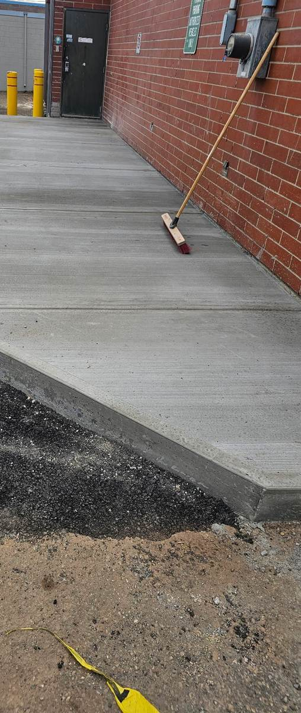
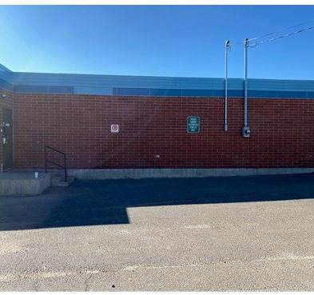
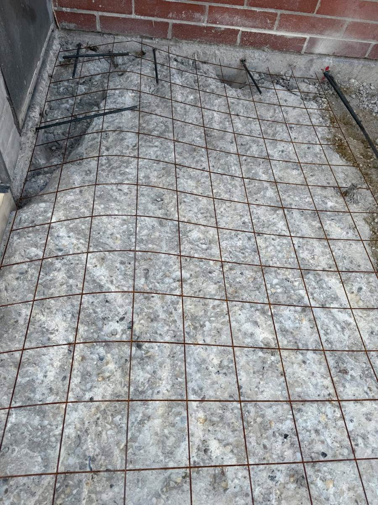
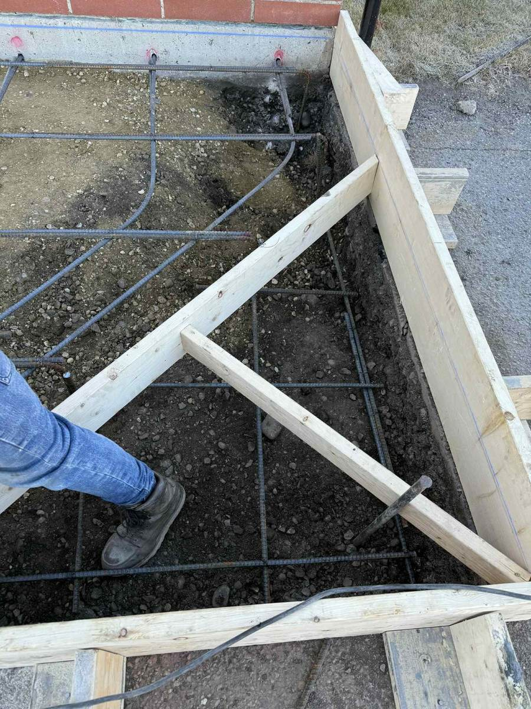
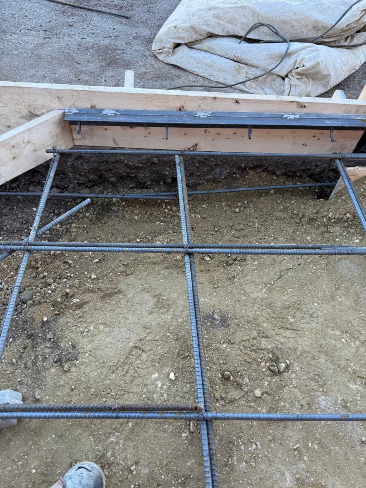
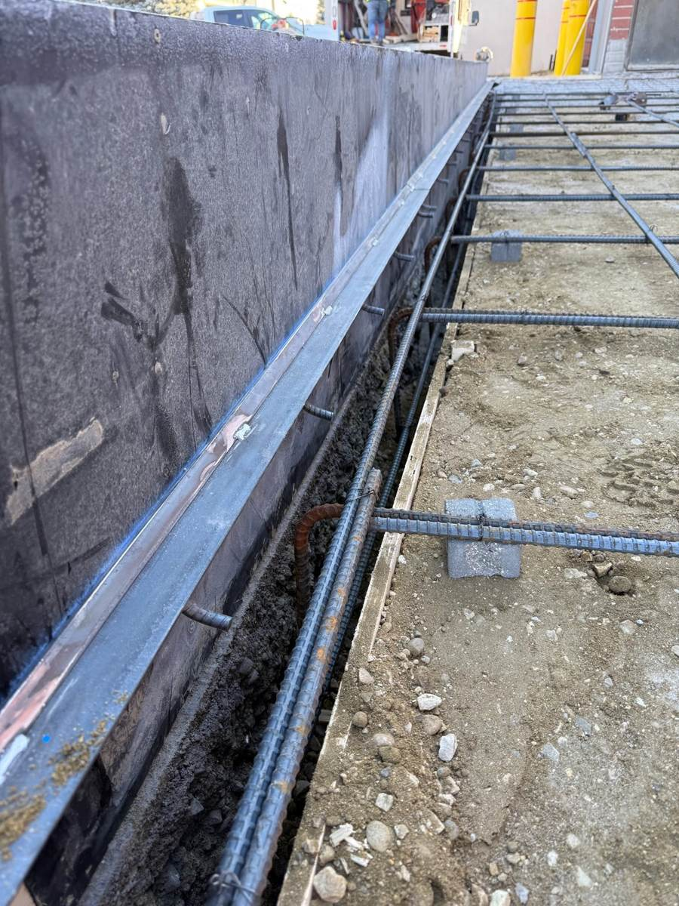
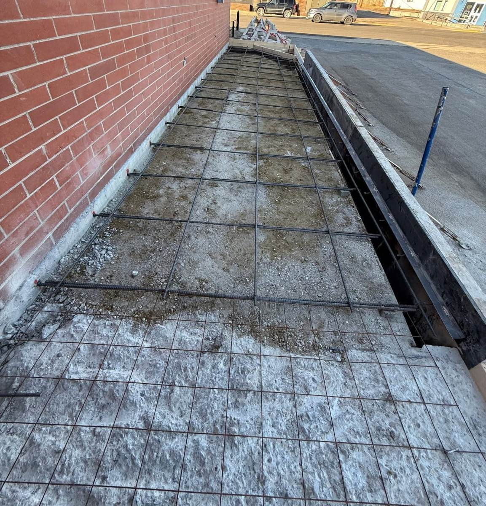
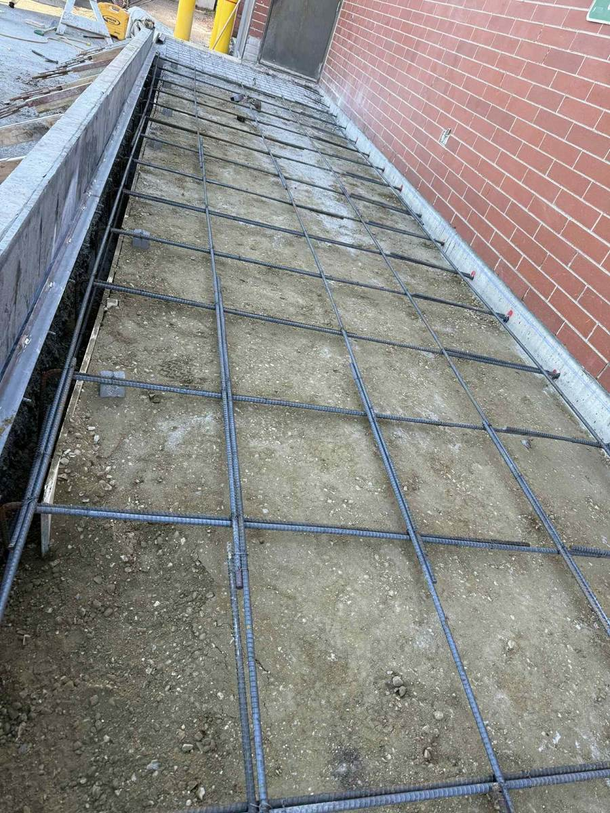
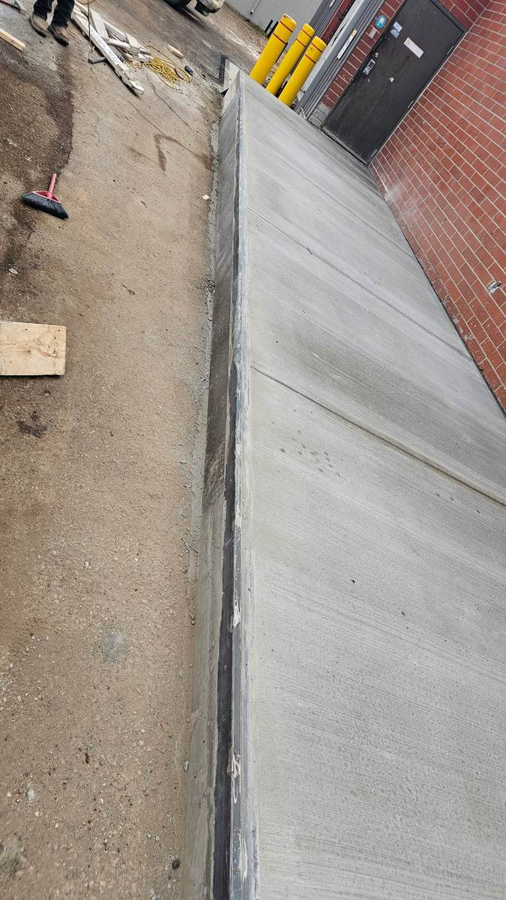

Ponoka, AB
Build a new, code-compliant concrete loading dock platform running the length of the building, tied properly into the existing foundation.
The new structural concrete had to dowel cleanly into the existing foundation and meet precise slope and drainage tolerances, all without taking the facility's loading operations out of service for long.
Removed the existing asphalt and saw-cut all edges, formed and poured a reinforced 6-inch, 30 MPa slab on an 8-inch concrete support wall with a 5/8-inch rebar grid doweled into the existing foundation, sloped correctly away from the building, and finished with a steel dock edge angle and a 45-degree low-side step at the road end.
A durable, properly draining concrete dock platform that's held up to daily freight traffic since completion.
Click any photo to view the full gallery.

Before
In progress
In progress
In progress
In progress
In progress
In progress
CompletedTell us the goal and the constraints. We'll tell you honestly what it will take.